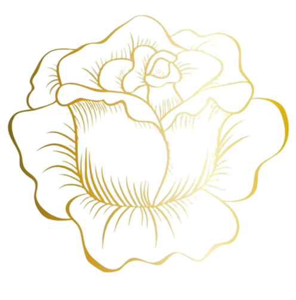
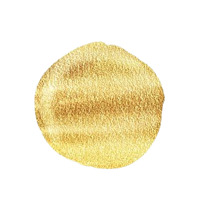

LET'S EXPLORE THE
TEMPLES OF MIZORAM
Shakti Worship: The Mantri Mandir is relatively modest in size and design, especially compared to the grand Hindu temples found in other parts of India. The simplicity of the structure reflects the local Khasi influence and the temple's focus on spiritual rather than material grandeur.
Modest Structure:The temple architecture draws heavily from traditional Vedic design principles, incorporating elements from ancient Indian temple architecture.
Raised Platform: ike many traditional Hindu temples, the Mantri Mandir is built on a raised platform. This elevation signifies the sacredness of the space and physically separates the holy area from the mundane world.
Prasadam Distribution: Prasad is a central part of the worship at Mantri Mandir. Devotees bring food items such as fruits, sweets, and other edibles as offerings to Goddess Durga.
Traditional Khasi Foods: TThe temple’s food practices may also incorporate traditional Khasi foods, reflecting the local culture. While the Prasad itself is typically vegetarian and aligned with Hindu customs, the broader food culture around the temple includes Khasi dishes like Jadoh.